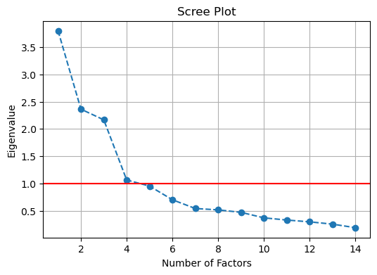
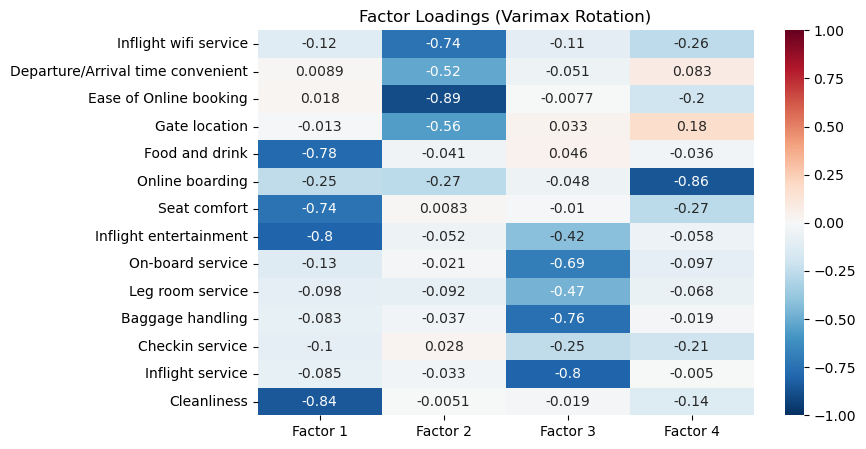

10장 탐색적 요인분석#
1. 데이터 입력#

Gemini 설명#
이 데이터셋은 항공사 승객 만족도 조사 데이터이다. 각 승객의 인적 사항, 비행 정보, 그리고 다양한 서비스에 대한 만족도 평가가 포함되어 있으며, 최종적으로 승객이 만족했는지 여부를 예측하는 분류 문제에 사용될 수 있다.
데이터의 주요 특징은 다음과 같다.
1. 데이터 구조#
총 데이터 수: 103,904개
변수(컬럼) 수: 25개
타겟 변수:
satisfaction(‘neutral or dissatisfied’ 또는 ‘satisfied’의 이진 분류)
2. 변수 설명#
승객 인적 사항 (Demographics)#
Gender: 성별 (Male, Female)Customer Type: 고객 유형 (Loyal Customer, disloyal Customer)Age: 승객 나이 (7세~85세 분포)
비행 정보 (Flight Information)#
Type of Travel: 비행 목적 (Business travel, Personal Travel)Class: 좌석 등급 (Business, Eco, Eco Plus)Flight Distance: 비행 거리
서비스 만족도 평가 (Services)#
14개의 서비스 항목에 대해 0~5점 척도로 평가된 점수이다.
Inflight wifi service(와이파이),Food and drink(식음료),Seat comfort(좌석 편안함),Inflight entertainment(기내 엔터테인먼트),On-board service(탑승 서비스),Leg room service(다리 공간),Cleanliness(청결도) 등이 포함된다.
지연 정보 (Delays)#
Departure Delay in Minutes: 출발 지연 시간(분)Arrival Delay in Minutes: 도착 지연 시간(분)
3. 데이터 특이사항#
Arrival Delay in Minutes변수에 310개의 결측치(NaN)가 존재한다. 분석 시 이를 제거하거나 평균/중앙값 등으로 대체하는 전처리가 필요할 수 있다.id와Unnamed: 0은 단순 식별자이므로 모델링 시 제외하는 것이 일반적이다.서비스 만족도 점수 중 0점은 ‘평가 없음’을 의미할 가능성이 있으므로 확인이 필요하다.
2. 탐색적 요인분석#
Gemini 분석#
1. 탐색적 요인분석이란?#
탐색적 요인분석(EFA: Exploratory Factor Analysis)은 다수의 변수들(여기서는 14개의 서비스 만족도 항목) 간의 상관관계를 분석하여, 이들을 소수의 잠재적 요인(Latent Factor)으로 묶어주는 통계 기법이다. 변수 축소(Dimension Reduction)와 데이터의 내재적 구조를 파악하는 데 주로 사용된다.
목적: 복잡한 데이터를 단순화하고, 관측되지 않은 근본적인 원인(요인)을 찾아내어 해석을 용이하게 한다.
원리: 서로 상관관계가 높은 변수들은 같은 요인에 속할 가능성이 높다는 점을 이용한다.
주요 개념:
요인 적재량(Factor Loading): 각 변수와 요인 간의 상관관계 정도를 나타내며, 절댓값이 클수록 해당 요인과의 관련성이 높음을 의미한다.
회전(Rotation): 요인의 축을 회전시켜 변수들이 특정 요인에 더 명확히 묶이도록 하여 해석력을 높인다 (주로 직각 회전인 Varimax 방식이 많이 쓰인다).
2. 분석 결과 요약#
데이터에 대해 EFA를 수행한 결과, 고유값(Eigenvalue)이 1 이상인 기준(Kaiser’s criterion)에 따라 총 4개의 요인이 추출되었다. 각 요인은 다음과 같은 서비스 항목들과 강한 연관성을 보인다 (적재량 절댓값 0.4 이상 기준).

요인 1: 기내 편의 및 엔터테인먼트 (In-flight Comfort & Entertainment)#
이 요인은 승객이 기내에 머무는 동안 직접적으로 체험하는 물리적 환경과 즐거움에 관련되어 있다.
Cleanliness(-0.84)Inflight entertainment(-0.80)Food and drink(-0.78)Seat comfort(-0.74)
요인 2: 예약 및 접근성 (Booking & Accessibility)#
항공권 예매부터 탑승 게이트 이동까지의 과정과 관련된 편의성을 대변한다.
Ease of Online booking(-0.89)Inflight wifi service(-0.74)Gate location(-0.56)Departure/Arrival time convenient(-0.52)
요인 3: 인적 서비스 (Staff Service)#
승무원과의 상호작용 및 서비스 태도와 관련된 항목들이 묶였다.
Inflight service(-0.80)Baggage handling(-0.76)On-board service(-0.69)Leg room service(-0.47)
요인 4: 온라인 탑승 수속 (Online Boarding Focus)#
특이하게도 Online boarding 항목이 단독으로 매우 높은 적재량(-0.86)을 보이며 별도의 요인으로 분류되었다. 이는 온라인 체크인 경험이 다른 서비스들과 구별되는 독자적인 만족도 결정 요인임을 시사한다.
3. 결론 및 시사점#
이 분석을 통해 14개의 복잡한 서비스 항목을 ‘기내 편의’, ‘예약 접근성’, ‘인적 서비스’, ‘온라인 탑승’ 이라는 4가지 핵심 차원으로 요약할 수 있다.
항공사는 이 4가지 차원을 기준으로 서비스 품질을 모니터링하고, 각 차원별 점수를 지표화(Index)하여 관리함으로써 보다 효율적인 고객 만족도 제고 전략을 수립할 수 있다. 예를 들어, ‘인적 서비스’ 요인의 점수가 낮다면 승무원 교육을 강화하고, ‘예약 접근성’ 요인이 문제라면 앱/웹 시스템을 개선하는 식이다.
ChatGPT 분석#
아래는 업로드된 train.csv의 서비스 평점 14개 문항(0~5점 척도)에 대해 탐색적 요인분석(EFA)을 “상관행렬 기반(주성분 요인추출) + Varimax 회전”으로 수행한 결과다. (표본이 10만+라서, 최대우도 FA를 직접 적합하기보다 상관행렬 기반 EFA로 빠르고 안정적으로 요인구조를 보는 방식)
1) 요인 수 선택#
서비스 평점 14개 변수의 상관행렬 고유값(내림차순)은 대략
1: 3.80
2: 2.36
3: 2.17
4: 1.06
5: 0.95 …
Kaiser 기준(고유값 > 1)으로는 4개 요인, 그리고 병렬분석(Parallel analysis)에서도 4번째 고유값이 랜덤 기준(95% 분위)보다 커서 4개 요인이 합리적이다.
2) 회전 후 적재량(Varimax)#
적재량의 부호는 임의라서(해석상 편하게) 요인별로 양(+) 방향으로 맞춰 해석했다.
아래는 회전 후 적재량(loading)이며, 해석 편의를 위해 값은 소수점 셋째자리 반올림.
변수 |
F1 |
F2 |
F3 |
F4 |
|---|---|---|---|---|
Cleanliness |
0.886 |
0.037 |
-0.015 |
0.101 |
Food and drink |
0.853 |
-0.049 |
0.048 |
0.018 |
Seat comfort |
0.823 |
0.018 |
-0.071 |
0.206 |
Inflight entertainment |
0.802 |
0.422 |
0.037 |
0.052 |
Inflight service |
0.074 |
0.841 |
0.049 |
-0.014 |
Baggage handling |
0.070 |
0.824 |
0.046 |
0.003 |
On-board service |
0.118 |
0.774 |
-0.020 |
0.084 |
Leg room service |
0.047 |
0.595 |
-0.043 |
0.195 |
Gate location |
0.013 |
-0.024 |
0.836 |
0.032 |
Departure/Arrival time convenient |
-0.010 |
0.085 |
0.751 |
0.130 |
Ease of Online booking |
-0.052 |
0.002 |
0.594 |
0.675 |
Inflight wifi service |
0.079 |
0.091 |
0.467 |
0.714 |
Online boarding |
0.298 |
0.032 |
-0.114 |
0.832 |
Checkin service |
0.103 |
0.346 |
-0.194 |
0.299 |
3) 요인 해석(라벨링)#
보통 적재량 0.4 이상을 “강한 적재”로 보면 다음처럼 깔끔하게 묶인다.
F1: 기내 쾌적/편의(Comfort & amenities)
Cleanliness, Food and drink, Seat comfort, Inflight entertainment가 크게 적재
F2: 서비스 운영 품질(Service operations)
Inflight service, Baggage handling, On-board service, Leg room service가 크게 적재
F3: 공항/동선·시간 편의(Travel convenience)
Gate location, Departure/Arrival time convenient, Ease of Online booking(부분) 등이 적재
F4: 디지털/셀프서비스 경험(Digital journey)
Online boarding, Inflight wifi service, Ease of Online booking이 크게 적재
(참고: Ease of Online booking은 F3/F4에 모두 크게 걸리는 “교차적재” 성격이 강하다. 즉 온라인 예약은 “편의”이면서 “디지털 경험”이기도 하다는 구조로 읽히는 게 자연스럽다.)
4) 설명력(공통분산 기준)#
회전 후 각 요인의 제곱적재량 합(SS loadings)을 14로 나눈 비율 기준으로 대략
F1: 21.2%
F2: 19.0%
F3: 13.6%
F4: 13.3%
합: 약 67.1%
즉 14개 서비스 평가 문항의 구조를 4개 잠재 요인으로 요약하면 공통된 변동의 약 2/3 정도를 설명한다.
원하면 다음도 바로 이어서 해줄 수 있다.
(1) 만족도(
satisfaction)를 종속변수로 두고, 4개 요인점수로 로지스틱 회귀(“어떤 요인이 만족도를 얼마나 밀어올리나?”)(2) 요인점수로 고객 세그먼트(군집) 만들기
(3) 교차적재 문항 처리(예: oblimin 같은 사각회전, 혹은 문항 재구성)
3. 탐색적 요인분석이란?#
ChatGPT 설명#
1) 요인분석이란 무엇인가 (목적)#
요인분석(Factor Analysis)은 많은 변수들을 몇 개의 ‘숨은 공통 요인’으로 요약하는 방법이다.
핵심 아이디어는 다음이다.
여러 변수들이 서로 비슷하게 움직인다면
그 뒤에는 공통된 보이지 않는 원인(잠재요인) 이 있다고 본다.
예를 들어
좌석 편안함
기내 청결
음식 만족도
이 값들이 함께 높아진다면 → “기내 쾌적성”이라는 하나의 요인이 있다고 해석할 수 있다.
즉, 목적은
차원 축소: 많은 변수를 몇 개 요인으로 정리
구조 이해: 데이터의 숨은 구조 파악
지표 구성: 여러 문항을 하나의 점수로 만들기 (예: 만족도 지수)
2) 언제 사용하는가#
요인분석은 특히 다음 상황에서 많이 사용된다.
설문 데이터 (만족도, 태도, 심리)
서비스 품질 평가
고객 경험 분석
심리학·마케팅·사회과학
조건은 간단하다.
변수들이 서로 상관되어 있어야 한다
서로 독립이면 요인으로 묶을 이유가 없다.
3) 기본 개념 (직관)#
요인분석은 다음과 같은 구조를 가정한다.
각 변수 = 공통요인 + 고유요인
수식으로 쓰면
\(F\) : 공통요인(잠재요인)
\(\lambda\) : 요인적재량(얼마나 관련 있는지)
\(\epsilon\) : 해당 변수만의 특성(오차)
해석은 간단하다.
적재량이 크다 → 그 요인의 성격을 잘 나타냄
예: 좌석편안함이 “쾌적성 요인”에 0.8 → 좌석편안함은 쾌적성을 잘 설명하는 변수
4) 분석 절차 (방법론 흐름)#
요인분석은 보통 다음 단계로 진행된다.
(1) 상관구조 확인#
변수들 간 상관이 있는지 확인
(2) 요인 수 결정#
대표 기준
고유값 > 1 (Kaiser 기준)
Scree plot (꺾이는 지점)
Parallel analysis (가장 권장)
(3) 요인 추출#
대표 방법
주성분 기반 방법 (Principal factor)
최대우도법 (Maximum Likelihood)
이 단계에서는 “요인의 방향”만 찾는다.
(4) 회전 (Rotation)#
가장 중요한 단계.
목적: → 해석을 쉽게 만들기
대표 회전
Varimax: 요인 간 독립 가정 (가장 많이 사용)
Oblimin: 요인 간 상관 허용
회전 전: 모든 변수에 조금씩 적재 회전 후: 각 변수는 특정 요인에만 크게 적재 → 구조가 명확해짐
(5) 해석#
예를 들어
변수 |
F1 |
F2 |
|---|---|---|
좌석 |
0.8 |
0.1 |
음식 |
0.7 |
0.2 |
직원친절 |
0.1 |
0.8 |
→ F1 = “기내환경” → F2 = “서비스”
5) 결과로 얻는 것#
요인분석을 하면 다음을 얻는다.
요인 구조
데이터의 숨은 차원
요인 점수
각 관측치의 “잠재 특성 점수”
이후 회귀, 군집 등에 사용 가능
예:
고객별 “서비스 만족 요인 점수”
6) 요인분석 vs PCA (자주 혼동)#
차이의 핵심:
PCA: 분산 설명이 목적 (수학적 차원축소)
Factor Analysis: 잠재 구조 설명이 목적
즉
PCA → 데이터 압축 FA → 의미 있는 구조 발견
7) 한 줄 정리#
요인분석은 “여러 관측 변수 뒤에 있는 몇 개의 숨은 개념을 찾아내는 방법” 이다.
원하면 다음도 간단히 이어서 설명해줄 수 있다.
좋은 요인분석 결과의 기준 (KMO, Bartlett)
실제 데이터에서 “요인분석이 잘된 경우 vs 잘못된 경우”
만족도 분석에서 요인분석을 어떻게 비즈니스 의사결정으로 연결하는지 (실무 관점)
참고: 파이썬 코드#
# 1. 데이터 로딩
import pandas as pd
# 데이터프레임 불러오기
df = pd.read_csv('../Data/train.csv')
# 데이터 확인하기
print("데이터 정보:")
print(df.info())
데이터 정보:
<class 'pandas.core.frame.DataFrame'>
RangeIndex: 103904 entries, 0 to 103903
Data columns (total 25 columns):
# Column Non-Null Count Dtype
--- ------ -------------- -----
0 Unnamed: 0 103904 non-null int64
1 id 103904 non-null int64
2 Gender 103904 non-null object
3 Customer Type 103904 non-null object
4 Age 103904 non-null int64
5 Type of Travel 103904 non-null object
6 Class 103904 non-null object
7 Flight Distance 103904 non-null int64
8 Inflight wifi service 103904 non-null int64
9 Departure/Arrival time convenient 103904 non-null int64
10 Ease of Online booking 103904 non-null int64
11 Gate location 103904 non-null int64
12 Food and drink 103904 non-null int64
13 Online boarding 103904 non-null int64
14 Seat comfort 103904 non-null int64
15 Inflight entertainment 103904 non-null int64
16 On-board service 103904 non-null int64
17 Leg room service 103904 non-null int64
18 Baggage handling 103904 non-null int64
19 Checkin service 103904 non-null int64
20 Inflight service 103904 non-null int64
21 Cleanliness 103904 non-null int64
22 Departure Delay in Minutes 103904 non-null int64
23 Arrival Delay in Minutes 103594 non-null float64
24 satisfaction 103904 non-null object
dtypes: float64(1), int64(19), object(5)
memory usage: 19.8+ MB
None
# 2. 탐색적 요인분석
import pandas as pd
import numpy as np
import matplotlib.pyplot as plt
import seaborn as sns
from sklearn.decomposition import FactorAnalysis
from sklearn.preprocessing import StandardScaler
# 1. 데이터 전처리
# 서베이 항목 컬럼 선택
survey_cols = ['Inflight wifi service', 'Departure/Arrival time convenient', 'Ease of Online booking',
'Gate location', 'Food and drink', 'Online boarding', 'Seat comfort',
'Inflight entertainment', 'On-board service', 'Leg room service',
'Baggage handling', 'Checkin service', 'Inflight service', 'Cleanliness']
X = df[survey_cols]
# 결측치 확인 및 처리 (0은 '평가 없음'일 수 있으나, 일단 척도로 간주하거나 분석에서 제외해야 함.
# 여기서는 0도 하나의 응답으로 보고 진행하되, 만약 0이 결측이라면 mean imputation 등을 고려해야 함.
# 보통 0을 포함해서 분석하거나, 0을 NaN으로 보고 삭제함.
# 이 데이터셋에서 0은 'Not Applicable'로 해석되기도 함.
# 하지만 팩터 분석을 위해 그대로 진행하거나, 0을 제외한 평균으로 대체하는 것이 좋음.
# 여기서는 간단히 그대로 진행 (스케일링이 중요))
scaler = StandardScaler()
X_scaled = scaler.fit_transform(X)
# 2. 적정 요인 수 결정 (Scree Plot & Eigenvalues)
# 상관계수 행렬의 고유값 계산
corr_matrix = np.corrcoef(X_scaled.T)
eigenvalues = np.linalg.eigvals(corr_matrix)
# 크기순 정렬
eigenvalues = np.sort(eigenvalues)[::-1]
print("Eigenvalues (top):", eigenvalues[:10])
# Scree Plot
plt.figure(figsize=(6, 4))
plt.plot(range(1, len(eigenvalues) + 1), eigenvalues, marker='o', linestyle='--')
plt.title('Scree Plot')
plt.xlabel('Number of Factors')
plt.ylabel('Eigenvalue')
plt.axhline(y=1, color='r', linestyle='-') # Kaiser's criterion
plt.grid()
plt.show()
# Kaiser 기준 (Eigenvalue > 1)에 따른 요인 수 결정
n_factors = sum(eigenvalues > 1)
print(f"\nOptimal number of factors (Eigenvalue > 1): {n_factors}")
# 3. 요인 분석 수행 (Factor Analysis)
# rotation='varimax'를 사용하여 해석력을 높임
fa = FactorAnalysis(n_components=n_factors, rotation='varimax', random_state=42)
fa.fit(X_scaled)
# 요인 적재량 (Factor Loadings) 확인
fa_components = pd.DataFrame(fa.components_.T, index=survey_cols, columns=[f'Factor {i+1}' for i in range(n_factors)])
print("\nFactor Loadings:")
print(fa_components)
# 시각화 (Heatmap)
plt.figure(figsize=(8, 5))
sns.heatmap(fa_components, annot=True, cmap='RdBu_r', center=0, vmin=-1, vmax=1)
plt.title('Factor Loadings (Varimax Rotation)')
plt.show()
Eigenvalues (top): [3.80011677 2.36198598 2.16589224 1.06327401 0.95093123 0.7003355
0.53995637 0.51465504 0.46947475 0.36866001]

Optimal number of factors (Eigenvalue > 1): 4
Factor Loadings:
Factor 1 Factor 2 Factor 3 Factor 4
Inflight wifi service -0.118254 -0.740117 -0.106329 -0.258091
Departure/Arrival time convenient 0.008928 -0.518830 -0.051124 0.082549
Ease of Online booking 0.017820 -0.892371 -0.007709 -0.196152
Gate location -0.012638 -0.560164 0.032955 0.177689
Food and drink -0.779936 -0.040708 0.045720 -0.036453
Online boarding -0.250417 -0.269587 -0.047991 -0.857874
Seat comfort -0.741534 0.008281 -0.010308 -0.271377
Inflight entertainment -0.804211 -0.052037 -0.417944 -0.058155
On-board service -0.132656 -0.020589 -0.690041 -0.096536
Leg room service -0.097972 -0.092149 -0.473165 -0.068422
Baggage handling -0.082763 -0.037304 -0.756995 -0.018552
Checkin service -0.100021 0.027725 -0.251406 -0.206449
Inflight service -0.085198 -0.033099 -0.799829 -0.004999
Cleanliness -0.844403 -0.005068 -0.019302 -0.138584

import numpy as np
import pandas as pd
service_cols = [
"Inflight wifi service",
"Departure/Arrival time convenient",
"Ease of Online booking",
"Gate location",
"Food and drink",
"Online boarding",
"Seat comfort",
"Inflight entertainment",
"On-board service",
"Leg room service",
"Baggage handling",
"Checkin service",
"Inflight service",
"Cleanliness",
]
X = df[service_cols].to_numpy(dtype=float)
# 표준화
Xz = (X - X.mean(axis=0)) / X.std(axis=0, ddof=0)
# 상관행렬
R = np.corrcoef(Xz, rowvar=False)
# 고유분해
eigvals, eigvecs = np.linalg.eigh(R)
idx = np.argsort(eigvals)[::-1]
eigvals, eigvecs = eigvals[idx], eigvecs[:, idx]
# 요인 수
k = 4
# 요인 적재량(주성분 요인추출)
L = eigvecs[:, :k] * np.sqrt(eigvals[:k])
def varimax(Phi, gamma=1.0, q=50, tol=1e-6):
p, k = Phi.shape
Rm = np.eye(k)
d = 0.0
for _ in range(q):
d_old = d
Lam = Phi @ Rm
u, s, vh = np.linalg.svd(
Phi.T @ (Lam**3 - (gamma / p) * Lam @ np.diag(np.diag(Lam.T @ Lam)))
)
Rm = u @ vh
d = s.sum()
if d_old != 0 and d / d_old < 1 + tol:
break
return Phi @ Rm
L_rot = varimax(L)
# 요인별 SS(정렬)
ss = (L_rot**2).sum(axis=0)
order = np.argsort(ss)[::-1]
L_rot = L_rot[:, order]
ss = ss[order]
loading = pd.DataFrame(L_rot, index=service_cols, columns=[f"F{i+1}" for i in range(k)])
# 부호 정리(해석 편의)
for c in loading.columns:
if loading[c].sum() < 0:
loading[c] *= -1
print("Eigenvalues (top):", eigvals[:10])
print("\nSS loadings:", ss)
print("\nSS/14:", ss / len(service_cols), "sum:", (ss / len(service_cols)).sum())
print()
print(loading.round(3))
Eigenvalues (top): [3.80011677 2.36198598 2.16589224 1.06327401 0.95093123 0.7003355
0.53995637 0.51465504 0.46947475 0.36866001]
SS loadings: [2.96894813 2.65727725 1.89930116 1.86574246]
SS/14: [0.21206772 0.18980552 0.13566437 0.13326732] sum: 0.6708049285312284
F1 F2 F3 F4
Inflight wifi service 0.079 0.091 0.467 0.714
Departure/Arrival time convenient -0.010 0.085 0.751 0.130
Ease of Online booking -0.052 0.002 0.594 0.675
Gate location 0.013 -0.024 0.836 0.032
Food and drink 0.853 -0.049 0.048 0.018
Online boarding 0.298 0.032 -0.114 0.832
Seat comfort 0.823 0.018 -0.071 0.206
Inflight entertainment 0.802 0.422 0.037 0.052
On-board service 0.118 0.774 -0.020 0.084
Leg room service 0.047 0.595 -0.043 0.195
Baggage handling 0.070 0.824 0.046 0.003
Checkin service 0.103 0.346 -0.194 0.299
Inflight service 0.074 0.841 0.049 -0.014
Cleanliness 0.886 0.037 -0.015 0.101